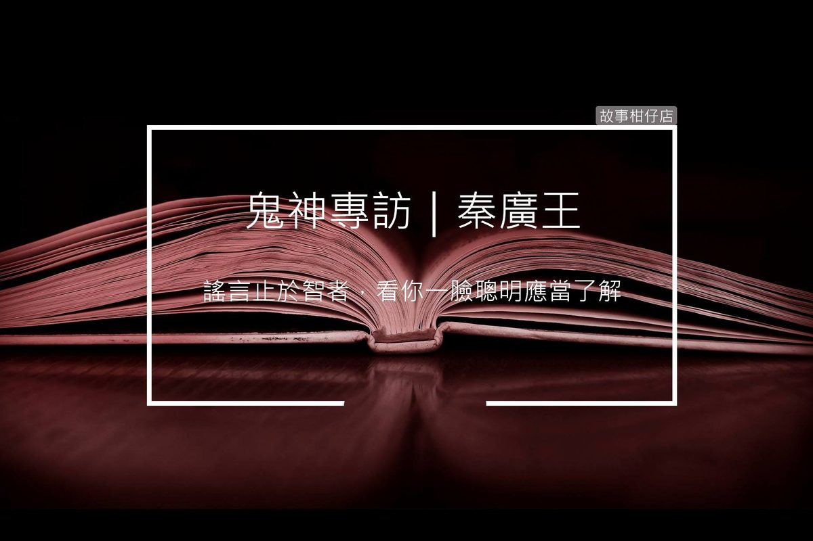

鬼神專訪／秦廣王

採訪人物：秦廣王
採訪人：老闆
採訪時間：民國107年，7月
採訪地點：第一殿後主管休息室
故事回顧：秦廣王日記
老闆：您好，難得訪到高級主管，請問可以開始了嗎？
秦廣王：可以，只是本王必須一邊批改公文，這點還請見諒。
老闆：沒問題。那進入第一個問題，請問您對目前的工作環境滿意嗎？
秦廣王：(遲疑兩秒)這裡是地府，審判懲惡之地，環境當然要有一些別出心裁設計，只是……，算了，總之這裡的環境本王覺得尚可接受，上司跟下屬之間因為近來業務繁忙又財務緊縮，不免有些衝突，但還算相處融洽，一片和睦。
「又勾錯，你們沒有長腦子嗎？不知道上面派你們來是幫忙還是添亂！」門外傳來白無常大聲斥責引渡人的話語。
老闆：是這樣嗎？聽說您的日記某篇外洩，裡面不只說您覺得環境不佳，員工嚇人，還渴望調職？可有此事？
秦廣王：(遲疑五秒)謠言止於智者，看你一臉聰明樣不會不了解這個道理。本王鐵面無私、不講情只說理，若真有衝突也都依法行政，多年來穩坐第一殿，無人敢指指點點，不過背地裡有人看不慣編編故事，本王也已習慣。
此等惡意中傷也非今日才有，我本居第五殿，後來因為第一殿的閻羅天子心腸太軟，常對亡魂從輕量刑，甚而放其還陽，上面覺得如此下去不行，才調本王來第一殿，看重的就是本王六親不認，只管善惡業報的個性。
當時各種陰謀論紛紛出籠，說本王甚會討好管理階層，暗中散布謠言中傷閻羅等等，時日一過，大家看本王的品性行為，此等言論自然煙消雲散。
秦廣王拿起西裝口袋裡的手帕，擦了擦臉上的汗
今日空調怎會如此不冷？本王等等還有人事會議要開，請你快點繼續。
老闆：好的好的，下個問題是想請問您服務多年，有沒有哪位屬下辦事您比較放心或比較操心？
秦廣王：我們這的下屬各個受過專業訓練，當上官職之後還有每月考核，制度嚴謹，除卻一些技術性上的小錯誤外，大致都還算稱職。
但若真要舉個操心的，大概就是那個白無常，性格頑劣不懂規矩，本王常叫她跟黑無常學學，一切都照制度程序走，別那麼多個人情緒。
本王就不懂一把白羽扇上面皆是惡人，為何總要留個一人不拘，這樣交出去的數據永遠都缺那一個，上面問下來，要本王如何應答？
突然白無常甩門進來。
白無常：秦廣大人，你說要共體時艱我也跟著減薪了，業務變多加班我也吞下去了，現在你配這一批啥都不會的菜鳥來當引渡人，是想累死我還是弄臭地府的名聲？
秦廣王：如此無禮，妳是這樣對長官說話的嗎？給妳一個當領導磨練的機會，懂不懂，別總是脾氣上來就來本王這撒野！真以為本王治不了妳！
黑無常衝進門來，邊道歉邊強拉著白無常離開。
老闆：阿，可以繼續嗎？
秦廣王：本王要去開會了，下次選個好時辰再訪吧！
秦廣王用力地整整公文後，快步離開，只留下桌上已經半濕的手帕。